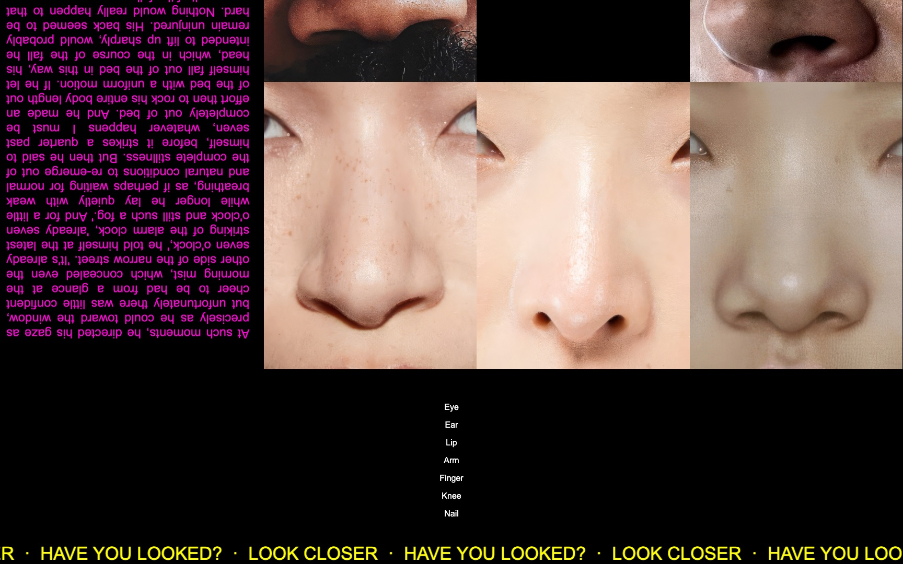
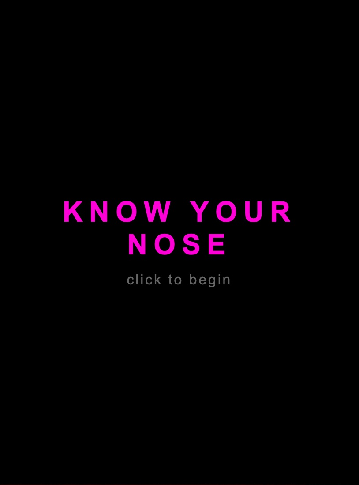
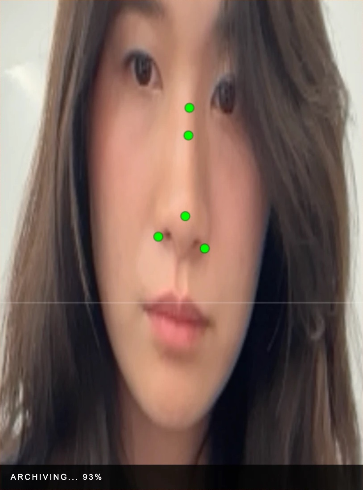
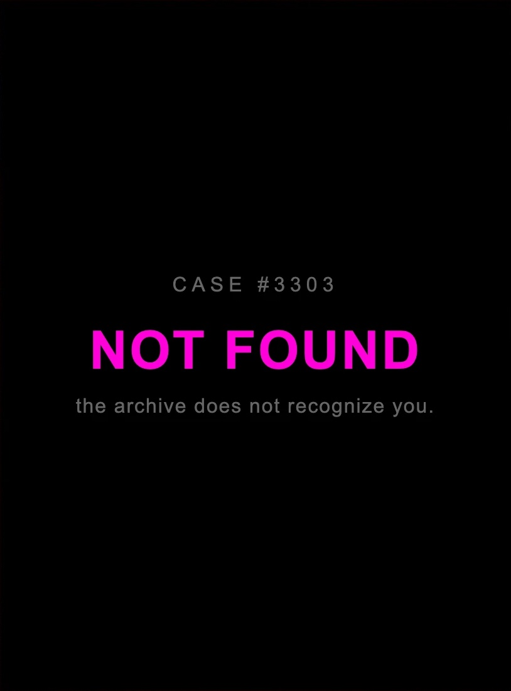
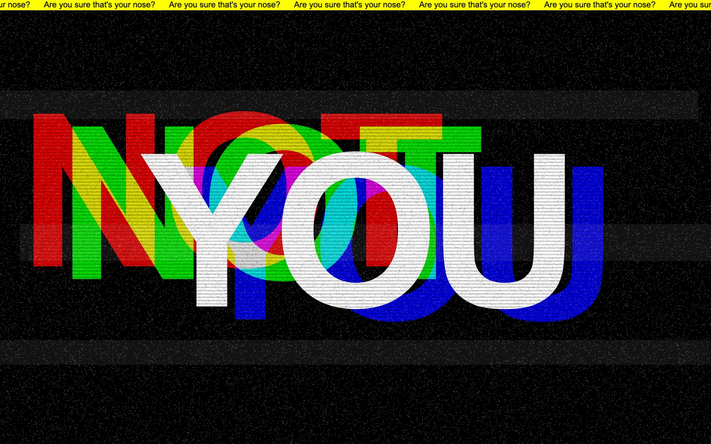
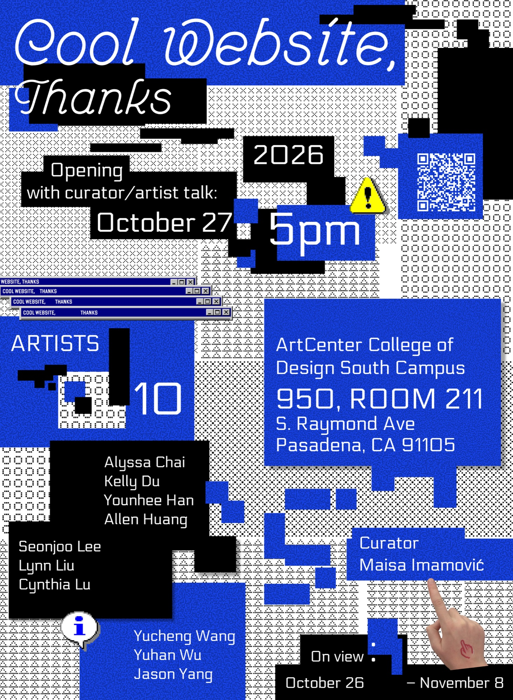
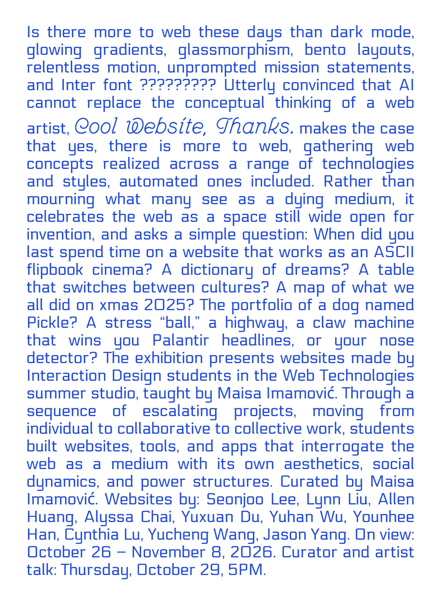

Web · Interaction · 2026
It's Not Your Nose
The website

Interaction — Know your nose
One tile in the gallery is a scanner. Click it, and the webcam finds your nose, archives it, and then fails to recognize it.



Hidden screens
Screens that only show up if you stay long enough or click where you are not told to.

Exhibition — Cool Website, Thanks
ArtCenter College of Design, South Campus · Oct 26 – Nov 8, 2026


Exhibition photo
Exhibition photo